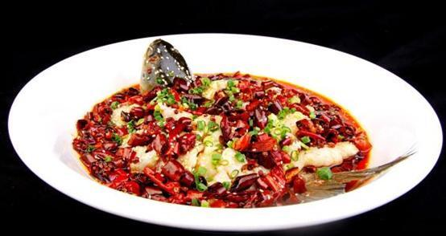

Stir fish head with chopped chili
- Recipe NameStir fish head with chopped chili
- Description
This dish is bright red, delicious and tender, Fat but not greasy, soft and glutinous taste.
- LevelMiddle
- Time Needed30min
- Main IngredientFish head 500g
- Auxiliary IngredientScallion 10g, ginger 300g, scallion 150g, chopped pepper right amount, oyster sauce right amount, steamed fish soy sauce right amount.
- Process
1. Wash fish head and soak ginger, scallion and fish head in water for 10 minutes. Put the fish head upside down on the plate, spread oyster sauce and monosodium glutamate, and then add chopped pepper.
2. Then turn the fish head upside down, evenly spread the above ingredients, pour in the steamed fish soy sauce, and steam in the steamer.
3. Sprinkle with scallions and hot oil.